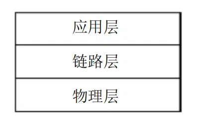

南瑞103协议详解
前言
IEC60870-5-103 传输规约是1999年10月1日实施的电力行业标准（国内称为DL/T667－1999继电保护设备信息接口配套标准），规约要求采用此规约的监控和保护装置必须符合该标准的所有强制性定义。
深圳所IEC-103是该标准的一个子集，主要目的在于明确应用层功能，满足IEC60870-5-103的所有强制性定义，如果该子集与IEC60870-5-103相冲突，则以IEC60870-5-103为准。
缩略语
ASDU（Application Service Data Unit）应用服务数据单元
COT（Cause Of Transmission）传动原因
DCO（Double COmmand)双命令
H（Hex）十六进制
KOD（Kind Of Description）命令的描述类型
TOO（Type Of Order）命令类型
IEC-103规约说明
IEC60870-5-103规约描述了两种信息交换的方法，第一种方法是基于严格规定的应用服务数据单元和为传输 “标准化” 报文的应用过程， 第二种方法使用了通用分类服务， 以传输几乎所有可能的信息。IEC-103( 深圳所 )两种方法都采用。利用第一种方法来实现校时、信号复归、传输保护事件、告警、状态量和故障录波数据；利用第二种方法来实现定值（包括修改定值） 、测量值、软压板（控制字） （包括修改软压板（控制字））的传输。
下面是其详细列表 (括号中是涉及到的主要长帧报文)。
- 保护动作事件 (ASDU2)
- 保护告警信息 (ASDU1)
- 保护状态信息 (ASDU1)
- 故障录波(ASDU23/ASDU24/ASDU25/ASDU26/ASDU27/ASDU28/ASDU29/ASDU30/ASDU31)
- 读取定值 (通用分类服务 ,ASDU10,ASDU21)
- 修改定值 (通用分类服务 ,ASDU10)
- 读取测量值 (通用分类服务 , ASDU10,ASDU21)
- 读取软压板（控制字） (通用分类服务 , ASDU10,ASDU21)
- 修改软压板（控制字） (通用分类服务 ,ASDU10)
- 校时 (ASDU6)
- 信号复归 (ASDU20)
IEC-103 规约结构
IEC 60870-5-103 规约基于三层参考模型（增强性能结构） ，这种模型用三层来表示：物理层、链路层、应用层。

IEC-103 物理层说明
支持光纤或者 RS-485 方式。
IEC-103 链路层说明
传输方式
非平衡传输。控制系统组成主站，继电保护设备为子站，按照严格的Polling（轮询）方式进行通信。
传输速率、校验方式和重复帧传输的超时时间
传输速率为 9600Kbit/s 或 19.2Kbit/s(可调)。8位数据位，1位停止位，校验方式为偶校验。
重复帧传输的超时时间间隔为50ms，控制系统中此值应当可以调节。
帧格式
两种：固定长帧格式和非固定长帧格式。
固定长帧格式
固定帧长帧格式用于控制系统向继电保护设备传输询问帧或命令帧（复位数据单元或复位帧计数位），或继电保护设备向控制系统传输确认帧或响应帧。
帧校验和是控制字、地址的算术和（不考虑溢出位即 256 模和）
子站和主站在接收报文时，校验启动字符、帧校验和、结束字符，检出任何一个差错，该数据帧无效。
可变长帧格式

可变帧长帧格式用于控制系统向继电保护设备传输数据，或由继电保护设备向控制系统传输数据之用。
长度L包括控制域、地址域、链路用户数据长度的总和， L最大值为 255,子站和主站在组织报文时， 要控制链路用户数据的长度， 注意使控制域、 地址域、 链路用户数据长度之和不要超出 255。如果超出，则要考虑分包传送。
帧校验和是控制、地址、链路用户数据的算术和，（不考虑溢出位即 256 模和）。
子站和主站在接收报文时， 应校验两个启动字符、 两个 L值应一致，接收字符数为 L+6,帧校验和、结束字符，若检出任何一个差错，则舍弃此帧数据。
控制系统至保护设备报文控制域定义
8位，一个字节。
- 备用位，始终为0。
- 启动报文位，始终为1，表示是由控制系统向继电保护设备传输，控制系统为启动站。
FCB（帧计数位），控制系统向同一个继电保护设备进行新一轮的发送/确认或请求/响应时，将FCB取反值。控制系统应为每一个继电保护设备保留一个帧计数位(FCB)的拷贝，若超时未从继电保护设备收到报文，或接收出现差错，则控制系统不改变帧计数位(FCB)的状态，重传原报文，重传次数大于等于 3 次，如果通信恢复，则继续正常通信过程，否则将复位该继电保护设备。继电保护设备在发送报文时，应该保留该发送报文的一个拷贝。在下一轮传输过程中如果控制系统的FCB有效且没有取反，则继电保护设备重新发送上一次发送报文的拷贝。在下一轮传输过程中如果控制系统的有效且FCB取反，则组织新报文发送，并保留此新报文的一个拷贝，并丢弃原来报文的拷贝。这样有效防止了报文丢失。
复位命令的帧计数位 (FCB)为 0,帧计数有效位 (FCV) 为 0。
广播校时报文不需要考虑报文丢失和重复重传，无需改变帧计数位 (FCB) 的状态，故在广播校时报文中帧计数有效位 (FCV) 为 0。FCV(帧计数有效位)，0表示帧计数位（FCB）的变化无效，1表示帧计数位（FCB）的变化有效。- 功能码：
| 功能码序号 | 帧类型 | 功能 | FCV |
|---|---|---|---|
| 0 | 发送/确认帧 | 复位通信单元 (CU) | 0 |
| 1－2 | —— | 备用 | — |
| 3 | 发送/确认帧 | 传送数据 (总查询启动、命令报文、读写定值和软压板 （控制字），读取测量值 ) | 1 |
| 4 | 发送/无回答帧 | 传送数据（广播校时） | 0 |
| 5－6 | —— | 备用 | — |
| 7 | 复位帧计数位 (FCB) | 传送数据 | 0 |
| 8 | —— | 备用 | — |
| 9 | 请求/响应帧 | 召唤链路状态 | 0 |
| 10 | 请求/响应帧 | 召唤1级用户数据 | 1 |
| 11 | 请求/响应帧 | 召唤2级用户数据 | 1 |
| 12－13 | —— | 备用 | — |
| 14－15 | —— | 备用 | — |
保护设备至控制系统报文控制域的定义
8位，一个字节。
- 备用位，始终为 0。
- 启动报文位，始终为 0：表示是由继电保护设备向控制系统传输。
ACD( 要求访问位 )，继电保护设备有1级用户用户数据，将ACD置1通知控制系统召唤1级用户数据，如果继电保护设备没有1级用户数据，则将ACD置0。DFC(数据流控制位 ) ，DFC=0表示继电保护设备可以接受数据。DFC=1表示继电保护设备的缓冲区已满，无法接受新数据。- 本规约规定深圳所保护设备上送报文中
DFC始终为 0，即可以接受新数据， 控制系统应能够处理DFC=1的报文。 - 功能码
| 功能码序号 | 帧类型 | 功能 |
|---|---|---|
| 0 | 确认帧 | 确认 |
| 1 | 确认帧 | 链路忙 |
| 2－5 | —— | 备用 |
| 6－7 | —— | 制造厂和用户协商定义 |
| 8 | 响应帧 | 以数据响应请求帧 |
| 9 | 响应帧 | 无所召唤的数据 |
| 10 | —— | 备用 |
| 11 | 响应帧 | 以链路状态或访问请求回答请求帧 |
| 12 | 备用 | |
| 13 | 制造厂和用户协商定义 | |
| 14 | 链路服务未工作 | |
| 15 | 链路服务未工作 |
功能码 0 :
继电保护设备从控制系统接收到复位、 读写数据报文时， 在传递 1 级用户数据之前， 都要发送一个短帧来通知控制系统继电保护设备已经接收到复位或读写数据报文， 且如果有 1级用户数据则将 ACD 置 1 来通知控制系统召唤 1 级用户数据。
功能码 1：
如果控制系统向继电保护设备召唤 1 级用户 ,继电保护设备能够确定有需要发送的 1 级用户数据 ,但由于某种原因无法立即组织好 ,可以用此功能码来组织短帧10 21 01 22 16（假定地址为 1） 通知控制系统该继电保护设备链路忙，控制系统在接收到此报文后在下一个周期轮询到此继电保护设备时，继续召唤 1 级用户数据。
IEC-103应用层说明
1级和2级用户
1级用户数据（优先级从高到低）：
- 一次设备的工作状态和系统工作状态发生变化时形成的数据。
- 继电保护设备动作信号。
- 初始化过程中，继电保护设备发送的
ASDU5报文。 - 控制系统发送总查询命令后，继电保护传送的状态量或动作信息，继电保护设备发送的总查询结束报文。
- 命令传输过程中，继电保护设备形成的肯定或否定认可报文。
- 在通用分类服务控制系统发送读或写命令后，继电保护设备发送的
ASDU10报文。 - 继电保护设备在故障录波后形成扰动数据时所产生的如下内容：
- 扰动数据表
ASDU23 - 扰动数据传输准备就绪
ASDU26 - 被记录的通道传输准备就绪
ASDU27 - 带标志的状态变位传输准备就绪
ASDU28 - 传送带标志的状态变位的状态
ASDU29 - 传送扰动值
ASDU30 - 带标志的状态变位传输结束
ASDU31
2 级用户数据：
二级用户数据主要用来传输测量值， IEC－ 103(深圳所)规定深圳所继电保护设备测量值采用通用分类服务传输， 故无 2 级用户数据， 当主站召唤 2 级用户数据时， 用无所请求报文数据回答。 但要求在非深圳所继电保护设备利用 ASDU3 、ASDU9 上送测量值的情况下， 深圳所控制系统能够支持。
应用层系统介绍
IEC－103（深圳所）是严格的 Polling 规约，按照非平衡方式传输，控制系统为主站，继电保护为子站。通信开始时，控制系统向继电保护设备发送服务命令使通信功能复位，然后是对保护进行广播校时，和总查询，总查询完毕后进入通常的召唤 2 级用户数据的过程。如果有突发事件，则子站首先通过ACD标志位置 1 通知主站本子站有 1 级用户数据， 主站然后根据ACD标志位为 1 来召唤 1 级用户数据。 对于控制系统主动发送的命令或通用分类服务读命令，子站首先响应一个短帧来确认收到此命令，并将ACD位置 1，通知主站有 1 级用户数据，主站然后根据ACD标志位为 1 来召唤 1 级用户数据， 如果此时子站尚未准备好 1 级用户数据， 则可发送链路忙报文并将ACD置 1 以通知主站子站忙，主站接收到此报文后应继续召唤 1 级用户数据，直到最后接收到 1 级用户数据或无所请求报文为止。
为了防止主站对某一个子站进行查询的时间过长，规定与某一个子站通信一次后应马上转入与下一个子站的通信过程， 主站应该记录与该子站的通信状态， 以便下一次轮询到此子站时能够继续正常通信。
应用层功能实现：
利用ASDU1传送告警、状态信息
利用ASDU2来传送事件
利用ASDU6来对保护装置校时
利用ASDU20来对保护装置信号复归
利用通用分类服务实现调取和修改定值、调取和修改测量值、调取测量值，其中定值支持调取多组定值。
本博客所有文章除特别声明外，均采用 CC BY-SA 4.0 协议 ，转载请注明出处！